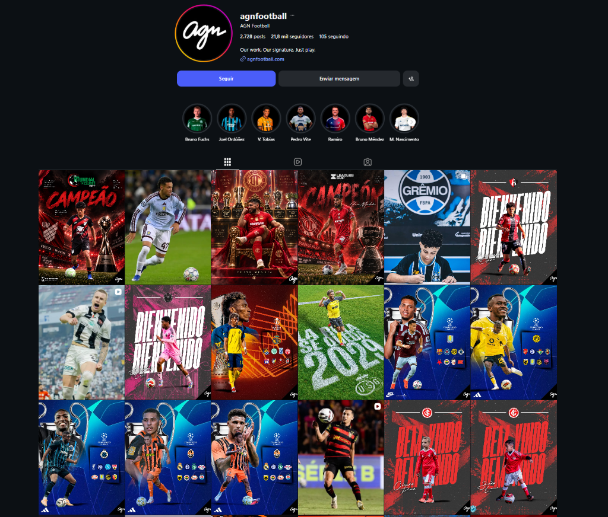

JE
Jogador de Elite
agora
Oficial
assina contrato profissional
Atleta
Oficial
assina contrato profissional
Atleta
Mais um atleta nosso no futebol profissional. Publicado também na AGN Football.
Dossiê do atleta
Aprovado
Dossiê do atleta
Aprovado
Dossiê · nº
O olhômetro não viu o seu jogo.
O Zyron viu.
A gente leu a sua história.
Se você está vendo isso, é porque tem o que é preciso.
Por que você · Jogador de Elite
Esta apresentação parte do seu perfil e do próximo passo que você busca no futebol. O plano ganha sentido quando começa em você.
Seu perfil. Sua evolução. Uma direção para seguir.
Dossiê · Individual

E se alguém
visse cada
lance seu?
Cada decisão. Cada movimento sem a bola. E levasse tudo isso a quem procura um jogador como você.
A resposta ao olhômetro
Zyron
O olheiro que não pisca.
Não olha pro lado.
Não cansa. Não esquece.
Inteligência artificial que lê cada lance do seu vídeo, com o mesmo critério pra todo atleta.
Plataforma ·
A plataforma
Tudo dele num lugar só.
O vídeo dele entra.
O Zyron mostra por onde ele joga.
Cada lance vira um clipe.
E sai o relatório.
Painel do
Tela ilustrativa
Último vídeo
Mapa de calor
Lances por ação
Passe
Condução
Desarme
Relatório
Pontos fortes
Prioridades
Acompanhamento ·
Acompanhamento
IA que não dorme.
Gente que acompanha.
O Zyron
A IA, ligada 24 horas
A IA e a equipe,
em volta do.
A equipe
Um agente humano de olho
Scout PRO
A cada 15 dias
Relatório do analista de performance.
O seu plano
Assessoria PRO
Toda semana
O estrategista de carreiras liga.
O seu plano
Legacy
Todo dia
Estrategista e gerente de carreira.
O seu plano
Em campo
, o seuO seu lugar em campo.
Todo elenco tem uma lacuna.
O Zyron encontra o perfil.
A gente faz a ponte.
Mais de 250 clubes procuram perfil.
Formação ilustrativa.
O cartão do .Perfil aprovado
Idade
anos
Cidade
Pé
Altura
Dossiê nº
AGN Football
Onde os nossos atletas aparecem.
Relação direta com a AGN Football, o canal que o mercado olha. Lá estão os nossos que fecharam no Brasil, na América do Sul e na Europa.

Joãozinho
Grêmio

Kaio
Internacional
Mesmo perfil do
O próximo

AGN Football
Jogadores que passaram pela AGN Football.

A rede ·
A rede
A gente encaminha. O clube decide.
Encaminhamos o perfil dele. Viabilizamos a ida.
Perfil do ,.pronto pra encaminhar.
Relação direta
AGN Football
Agência de atletas, no Brasil e no exterior. Administrada por quem tem 25 anos de gestão de atletas.
agnfootball.com
Os clubes
Quem decide
+250clubes na nossa rede
+75encaminhamentos no último mês
O rosto da casa
David Willer
A casa está há mais de dez anos nisso e já revelou centenas de atletas.
No seu plano: conexão direta com clubes e AGN, assessoria individual com o David todo mês e pelo menos 15 encaminhamentos de oportunidades por mês. No seu plano: pelo menos 5 encaminhamentos de oportunidades por mês, pra clubes do Brasil e do mundo. No seu plano: o Scout PRO é o começo. O encaminhamento pra clubes vem a partir da Assessoria PRO.
Dossiê · · nº
O que é seu a partir de hoje
O que o você leva.
IA
O Zyron lê cada lance do seu vídeo, ligado 24 horas.
Gente
Um analista de performance, a cada 15 dias.O estrategista de carreiras liga toda semana.Estrategista e gerente de carreira, todo dia.
Conexões
Relação direta com a AGN Football e mais de 250 clubes.Perfil encaminhado a clubes do Brasil e do mundo.A partir da Assessoria PRO.
Oportunidades
Pelo menos 15 encaminhamentos de oportunidades por mês.Pelo menos 5 por mês.A partir da Assessoria PRO.
Tempo
Depois, o relatório da sua evolução a cada 15 dias.Depois, a ligação do estrategista toda semana.Depois, gente do seu lado todo dia.Em até 3 meses, mais de 93% dos nossos já estão encaminhados a clubes.Referência de atletas acompanhados.
Garantia
Dossiê do atleta
Dossiê · · nº
A decisão
A vaga do .
O começo do .
Dessa turma de 10, A próxima abre em .
Confirmando hoje, o gerente de carreira entra em contato , e o Zyron começa a acompanhar o .
Confirmando hoje, a equipe entra em contato com vocês, e o Zyron começa a ler o jogo do .
Hoje
Confirmado, a equipe entra em contato com vocês.
A cada vídeo novo
O Zyron lê o seu jogo, e sai um relatório novo.
No ritmo de vocês
Vocês escolhem o acompanhamento que faz sentido agora.
Hoje
A vaga confirmada. O gerente de carreira e o Zyron começam.
Em até 3 meses
Mais de 93% dos nossos já estão encaminhados a clubes.
O dia da assinatura
Contrato profissional. É nesse dia que a gente ganha.
Confiança pra começar
Garantia total.
Todo o valor investido é devolvido.
A média de fechamento dos nossos atletas é de cerca de três meses. A gente confia no trabalho, na estrutura e no método: se vocês aplicarem o método e não fizer sentido pro momento de vocês, o dinheiro volta inteiro.
Sem burocracia.
Prazo da garantia: .
100%
do investimento
de volta
Garantia do
vitalício
10x sem juros de
vitalício
10x sem juros de
vitalício
10x sem juros de
A garantia refere-se ao investimento realizado na assessoria. Pra acionar, é preciso comprovar que o método foi aplicado, conforme os termos do contrato.
Plano do · nº
Bem-vindo, .
O lugar do O seu lugar
Hoje
O gerente de carreira entra em contato .O gerente de carreira entra em contato .
A equipe entra em contato com vocês.
O Zyron e o gerente em cima do seu jogo, começando . Quem corre atrás é a gente.
O dia da assinatura
O próximo passo
Seu nome no contrato e publicado na AGN Football. Nesse dia, a gente ganha junto com você.
Jogador de Elite
agora
Oficial
assina contrato profissional
Atleta
Oficial
assina contrato profissional
Atleta
Mais um atleta nosso no futebol profissional. Publicado também na AGN Football.
Jogador de Elite